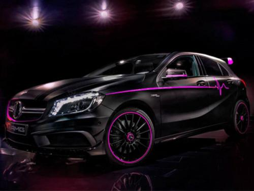
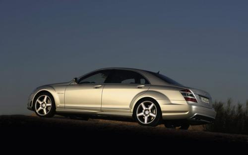

梅赛德斯-奔驰
AMG系列介绍
A45amg--地表最最强小钢炮
全新A45将采用来自Concept A Sedan的设计理念，前脸夸张的格栅和张扬的前保险杠预示着其不俗的性能，其车身尺寸相比现款将有所改进，18/19英寸的轮毂以及尾翼亦不会缺陷。新车内部将配有液晶仪表、COMAND 5娱乐系统、带触控板的运动方向盘等设计元素。据外媒报道，全新A45将搭载改进版M133型2.0T涡轮增压发动机，其最大功率或将超过298kW（400bhp），最大扭矩将达到500Nm。此外，新车还有望搭载48V轻混系统以驱动电动涡轮，并搭载支持扭矩矢量分配功能的四驱系统和全新的9速双离合变速箱，“破百”时间有望达到4.0秒。
ClAamg--时尚与速度并存
在CLS这种大型四门轿跑车型上看上去顺滑柔美的车身线条以及凌厉的腰线，要复刻在尺寸明显比W218小一号的C117上，如果处理不好很可能会演变成一场灾难。但这在年轻但却有着丰富的奔驰车型设计经验的设计师Mark Fetherston看来并不算什么难题，他巧妙的将CLS 63 AMG集优雅、运动与力量感于一身的经典基因完美注入到了CLA 45 AMG的身上。
梅赛德斯-AMG E43 4MATIC特别版在设计上并没有脱离家族式设计，而全新的AMG Line外观套件，点阵式前进气格栅的设计都让人眼前一亮。除此之外，E43上的搭配的20寸轮圈也更能体现其运动基因。内饰部分，新车同样配备了三辐式运动平底方向盘，并搭载了12.3英寸的数字仪表和液晶显示屏。动力方面，E 43搭载的是一台3.0T双涡轮增压发动机，最大功率401马力（295kW），520牛·米的最大扭矩从2500rpm开始就能释放出来。在传动系统部分，其匹配的是9速自动变速箱
G63amg--霸气与速度并存
外观方面，新一代AMG G级车型延续了G级38年经典的方盒子设计，不过其前进气格栅回归了三横幅式设计，同时，前保险杠也相对现款车型做了小幅度修改。据悉，该车的底盘使用了更多的铝制材料，车身重量有望下降400千克。此外，新车未来有望配备LED光源大灯。动力方面，据外媒猜测，新一代AMG G 63或将采用4.0T V8双涡轮增压发动机来取代现有的5.5TV8双涡轮增压发动机；而G 65有望继续搭载6.0T V12发动机；普通版的奔驰G级则有望搭载奔驰全新开发的直列6缸涡轮增压柴油发动机。传动部分均匹配9速自动变速箱。
S65amg--奢华与速度并存
新车相比目前在售的奔驰S级，在外观上采用更加运动的造型设计。标志性的前中网采用三根双横条辐镀铬格栅，前进气格栅和保险杠位置格栅均采用蜂窝网状设计，并进行了镀铬处理，前大灯采用全LED灯组，造型非常犀利。车身侧面，新车前翼子板标有“V12 BITURBO”的字样，象征着它所装备的V12双涡轮增压发动机。此外，新车配备了全新的多辐抛光轮圈和陶瓷刹车盘。新车搭载一台6.0升V12双涡轮增压发动机，最大功率达到630马力，峰值扭矩1000牛·米。传动方面，与发动机匹配的是7速AMG SPEEDSHIFT变速箱。官方称新车的0-100km/h的加速时间为4.1秒